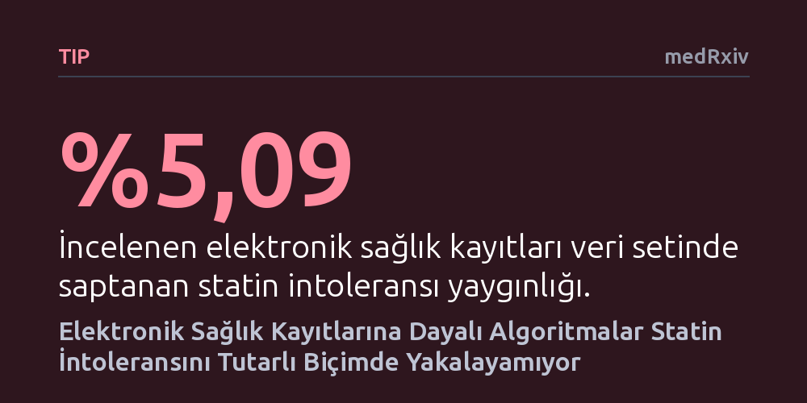

TIP · medRxiv · 2026-10-14
Araştırmacılar, elektronik sağlık kayıtlarını tarayan algoritmaların statin intoleransını ne kadar doğru tespit ettiğini ve durumun sıklığını inceledi. Gerçek klinik verilerde statin intoleransı oranı %5,09 çıkarken, incelenen altı algoritmanın hiçbiri hastaları belirlemede tek başına tutarlı bir başarı gösteremedi.
Rutin elektronik hasta kayıtlarına dayalı algoritmaların, kolesterol ilacı yan etkilerini ve ilaç bırakma nedenlerini saptamakta henüz klinik karar desteği sağlayacak güvenilirlikte olmadığını gösterir.

Kalp ve damar hastalıklarından korunmada kolesterol düşürücü statin grubu ilaçlar tüm dünyada en sık reçete edilen tedaviler arasında yer alıyor. Ancak bazı hastalar, özellikle kas ağrısı ve halsizlik gibi yan etkiler nedeniyle ilacı tolere edemiyor veya tedaviyi yarım bırakıyor. Klinik pratikte 'statin intoleransı' olarak adlandırılan bu durum, hastaların koruyucu tedaviden mahrum kalmasına ve kardiyovasküler risklerinin yeniden yükselmesine yol açabiliyor.
Sağlık sistemlerinin hızla dijitalleştiği günümüzde, milyonlarca hastanın elektronik sağlık kayıtlarını otomatik olarak tarayıp kimin ilacı tolere edemediğini algoritmalarla tespit etme fikri büyük bir fırsat olarak görülüyor. Eğer bilgisayar algoritmaları bu hastaları rutin doktor notları ve reçete verilerinden güvenilir biçimde yakalayabilirse, hekimler zamanında uyarılabilir ve alternatif tedavilere hızlıca geçilebilir. Ancak bu algoritmaların gerçek klinik ortamlardaki doğruluğu şimdiye kadar kapsamlı biçimde doğrulanmamıştı.
Araştırmacılar, bu belirsizliği gidermek amacıyla Avustralya'daki birinci basamak sağlık hizmetlerinden derlenen elektronik sağlık kayıtları ağındaki (ePBRN) verileri inceledi. Çalışmada, kalp damar hastalıklarının birincil korunması amacıyla statin başlanmış hastaların kayıtları mercek altına alındı.
Araştırma ekibi ilk olarak dünya genelinde geliştirilmiş elektronik fenotipleme yaklaşımlarını tarayarak altı farklı algoritma belirledi. Bu algoritmalar arasında ABD (Minnesota kural tabanlı ve USA SIMs), Japonya (SIMs ve SAMT), Singapur (SIMs varyantları) ve İngiltere Ulusal Sağlık Hizmeti (NHS-UK) protokolleri yer aldı. Ardından, uzman görüşleriyle oluşturulan bir referans standart zemininde tüm algoritmaların hastaları ayırt etme başarısı tek tek ölçüldü.
İncelenen veri setinde statin intoleransının gerçek yaygınlığı %5,09 olarak belirlendi. Bu oran, Avustralya ve dünya genelinde bildirilen yüzde 5 ila 15 aralığının alt sınırında kaldı.
Algoritmaların performans ölçümleri incelendiğinde, hiçbir algoritmanın tüm değerlendirme kriterlerinde dengeli ve yüksek bir başarı yakalayamadığı görüldü. Örneğin Singapur SIMs-B algoritması %92,95 duyarlılıkla hastaların büyük kısmını tespit edebilse de genel doğruluğu yalnızca %57,05 düzeyinde kaldı. Buna karşılık Japonya SAMT algoritması %99,13 özgüllük ve %76,19 pozitif tahmin değeri sunarak yanlış alarm üretmeme konusunda öne çıktı, ancak pek çok hastayı gözden kaçırdı.
En dikkat çekici sonuç ise algoritmaların referans standartla gösterdiği korelasyonun -0,02 ile 0,05 gibi son derece zayıf bir aralıkta kalması oldu. Bu durum, algoritmaların klinik referansla neredeyse tamamen uyumsuz sonuçlar ürettiğini ortaya koydu.
Elde edilen bulgular, rutin sağlık kayıtlarının karmaşık ve düzensiz yapısının otomatik teşhis sistemleri önünde ciddi bir engel oluşturduğunu gösteriyor. Hekimlerin hasta notlarına farklı biçimlerde girdiği şikayetler, eksik laboratuvar sonuçları ve ilaç değişim nedenlerinin sisteme her zaman net işlenmemesi, kural tabanlı algoritmaların yanılmasına neden oluyor.
Yazarlar, mevcut elektronik fenotipleme algoritmalarının klinik karar destek sistemlerinde doğrudan kullanılmasının şu aşamada güvenli olmadığını vurguluyor. Yetersiz bir algoritma, ilaca ihtiyacı olan bir hastanın tedavisinin gereksiz yere sonlandırılmasına ya da ciddi kas şikayeti yaşayan bir hastanın fark edilmemesine yol açabilir. Bu nedenle rutin klinik veriler zenginleştirilmeden ve algoritmalar geliştirilip doğrulanmadan bu sistemlerin hasta bakımına entegre edilmemesi gerektiği belirtiliyor.